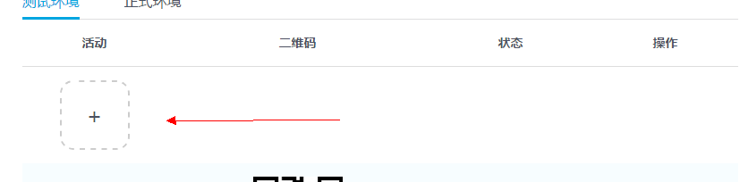

活动测试环境和正式环境
活动前端静态资源
开发者在模拟器上完成开发后，将html页面，css文件，前端js脚本等，按zip格式打包成一个zip包，称为页面资源压缩包。
活动后台逻辑资源
逻辑资源包括两个文件：
logic.js 开发者在模拟器的logic目录下的logic.js文件。
config.json 开发者在模拟器的data目录下的config.json文件。
请将这两个文件（不要嵌套目录，直接选择这两个文件压缩），按zip格式打包成一个zip包，称为后台资源压缩包。
创建活动并部署现网测试
1.用已认证的qq账户登录hudong.qq.com 2.点击游戏管理到游戏管理页面后点击活动tab 3.点击添加活动按钮

4.填写活动相关信息，并点击提交，创建完活动